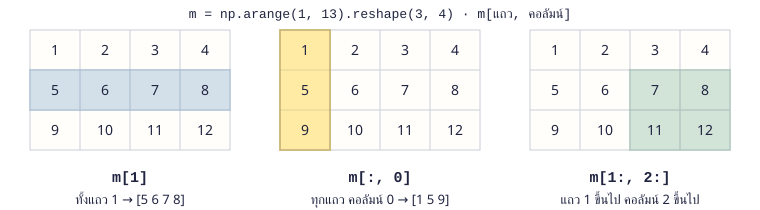
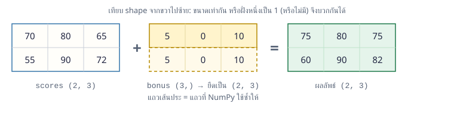
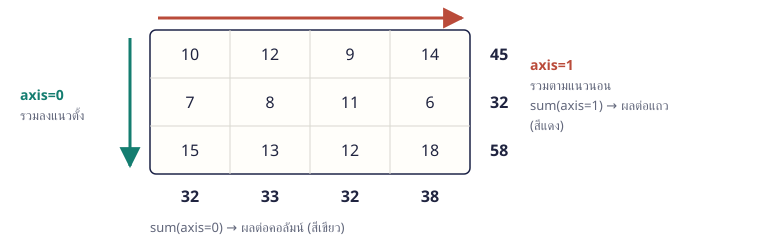

เมื่อจบบทนี้ นิสิตจะทำได้ สร้างและปรับรูปร่าง array เลือกข้อมูลด้วย index/slicing คำนวณทั้งชุดโดยไม่ต้องวนลูป ใช้ broadcasting กรองข้อมูลด้วยเงื่อนไข สรุปตามแถว/คอลัมน์ และนำไปแก้โจทย์จริงได้
14.1 ทำไมต้อง NumPy NumPy (Numerical Python) คือแพ็กเกจสำหรับคำนวณตัวเลขจำนวนมาก หัวใจของมันคือ ndarray ที่เก็บตัวเลขชนิดเดียวกันเรียงติดกันในหน่วยความจำ จึงสั่งคำนวณทั้งชุดได้ในคำสั่งเดียว (เรียกว่า vectorization) และทำงานเร็วกว่าการวนลูปกับ list หลายสิบเท่า pandas, Matplotlib และ scikit-learn ที่จะเรียนต่อจากนี้ล้วนสร้างอยู่บน NumPy ติดตั้งด้วย pip install numpy แล้ว import ด้วยชื่อย่อ np ตามธรรมเนียม
topic_14_1.py
import numpy as np
prices = [120 , 80 , 45 , 300 ]
# list: ต้องวนลูปเอง
with_vat = []
for p in prices:
with_vat.append (round (p * 1.07 , 2 ))
print (with_vat)
# NumPy: คำนวณทั้งชุดในบรรทัดเดียว
arr = np.array (prices)
print (np.round (arr * 1.07 , 2 ))ผลลัพธ์ [128.4, 85.6, 48.15, 321.0]
[128.4 85.6 48.15 321. ] จำง่าย ๆ คิดแบบ NumPy คือ “สั่งทั้งชุด” แทน “วนทีละตัว” ถ้าเห็นตัวเองเขียน for กับ array ให้ลองหาคำสั่งที่ทำทั้งชุดได้ก่อน
14.2 สร้าง array สร้างจาก list ด้วย np.array() หรือใช้ฟังก์ชันสร้างอัตโนมัติ ทุกค่าใน array ต้องเป็นชนิดเดียวกัน (ดูได้จาก dtype) ถ้ามีทศนิยมแม้ค่าเดียว ทั้ง array จะเป็น float การสุ่มให้ใช้ np.random.default_rng(seed) ซึ่งใส่ seed แล้วจะได้ผลเดิมทุกครั้ง เหมาะกับการทดลองและตรวจงาน
topic_14_2.py
import numpy as np
a = np.array ([3 , 1 , 4 , 1 , 5 ])
print (a, a.dtype)
print (np.array ([1.5 , 2 , 3 ]).dtype) # มีทศนิยม ทั้งหมดจึงเป็น float
print (np.arange (0 , 20 , 5 ))
print (np.linspace (0 , 1 , 5 ))
print (np.full (4 , 7 ))
rng = np.random.default_rng (42 ) # seed เดิม = สุ่มได้ผลเดิม
print (rng.integers (1 , 7 , size=10 )) # ทอยลูกเต๋า 10 ครั้ง ผลลัพธ์ [3 1 4 1 5] int64
float64
[ 0 5 10 15]
[0. 0.25 0.5 0.75 1. ]
[7 7 7 7]
[1 5 4 3 3 6 1 5 2 1] 14.3 รูปร่าง: shape และ reshape array มีได้หลายมิติ shape บอกขนาดแต่ละมิติ (เช่น (3, 4) คือ 3 แถว 4 คอลัมน์) ndim บอกจำนวนมิติ และ size บอกจำนวนสมาชิกทั้งหมด reshape() จัดข้อมูลชุดเดิมเป็นรูปร่างใหม่ ใส่ -1 ได้หนึ่งมิติเพื่อให้ NumPy คำนวณขนาดเอง และ .T สลับแถวกับคอลัมน์
topic_14_3.py
import numpy as np
a = np.arange (1 , 13 )
print (a.shape, a.ndim, a.size)
m = a.reshape (3 , 4 ) # 3 แถว 4 คอลัมน์
print (m)
print (m.shape, m.ndim)
print (a.reshape (2 , -1 ).shape) # -1 = ให้ NumPy คำนวณเอง
print (m.T .shape) # สลับแถวกับคอลัมน์ ผลลัพธ์ (12,) 1 12
[[ 1 2 3 4]
[ 5 6 7 8]
[ 9 10 11 12]]
(3, 4) 2
(2, 6)
(4, 3) จำง่าย ๆ reshape ต้องมีจำนวนสมาชิกเท่าเดิม 12 ค่าจัดเป็น 3×4 หรือ 2×6 ได้ แต่ 5×3 ไม่ได้
14.4 เลือกข้อมูล: index และ slicing array 1 มิติใช้ index และ slicing เหมือน list ส่วน array 2 มิติเขียน m[แถว, คอลัมน์] ในวงเล็บเดียว ใช้ : แทน “ทั้งหมด” ในมิตินั้น และส่ง list ของ index เพื่อเลือกหลายตำแหน่งพร้อมกันได้

m[1] เลือกทั้งแถว 1, m[:, 0] เลือกทั้งคอลัมน์ 0 และ m[1:, 2:] เลือกมุมขวาล่าง topic_14_4.py
import numpy as np
m = np.arange (1 , 13 ).reshape (3 , 4 )
print (m[0 , 2 ]) # แถว 0 คอลัมน์ 2
print (m[1 ]) # ทั้งแถว 1
print (m[:, 0 ]) # ทั้งคอลัมน์ 0
print (m[1 :, 2 :]) # มุมขวาล่าง
print (m[[0 , 2 ], -1 ]) # แถว 0 กับ 2 คอลัมน์สุดท้าย ผลลัพธ์ 3
[5 6 7 8]
[1 5 9]
[[ 7 8]
[11 12]]
[ 4 12] 14.5 คำนวณทั้ง array และฟังก์ชันคณิตศาสตร์ เครื่องหมาย + - * / ** // % ทำงานกับทุกค่าทีละตำแหน่ง ทั้ง array กับตัวเลข และ array กับ array ที่ขนาดเท่ากัน นอกจากนี้ NumPy มีฟังก์ชันคณิตศาสตร์ (ufunc) ที่ทำกับทุกค่าพร้อมกัน
topic_14_5.py
import numpy as np
price = np.array ([100 , 250 , 80 ])
qty = np.array ([2 , 1 , 5 ])
total = price * qty # คูณคู่ตำแหน่งเดียวกัน
print (total, total.sum ())
print (np.sqrt (np.array ([4 , 9 , 16 ])))
print (np.round (np.array ([2.456 , 3.14159 ]), 1 ))
print (np.maximum (np.array ([3 , 8 , 1 ]), 5 )) # ค่าที่น้อยกว่า 5 กลายเป็น 5 ผลลัพธ์ [200 250 400] 850
[2. 3. 4.]
[2.5 3.1]
[5 8 5] 14.6 broadcasting: คำนวณกับ array คนละขนาด เมื่อขนาดไม่เท่ากัน NumPy จะ “ยืด” array ที่เล็กกว่าให้เท่ากับอีกตัวโดยไม่ต้องคัดลอกจริง เช่น บวกคะแนนพิเศษรายวิชา (3 ค่า) ให้ทุกคนในตาราง 2×3 กติกาคือเทียบ shape จากขวาไปซ้าย แต่ละมิติต้องเท่ากัน หรือฝั่งใดฝั่งหนึ่งเป็น 1

scores (2,3) + bonus (3,) → NumPy ยืด bonus ให้ทุกแถวแล้วบวกทีละตำแหน่ง ได้ผล (2,3) topic_14_6.py
import numpy as np
scores = np.array ([[70 , 80 , 65 ],
[55 , 90 , 72 ]]) # 2 คน × 3 วิชา
bonus = np.array ([5 , 0 , 10 ]) # คะแนนพิเศษรายวิชา
print (scores + bonus) # bonus ถูกบวกให้ทุกแถว
weights = np.array ([0.3 , 0.3 , 0.4 ])
print ((scores * weights).sum (axis=1 )) # คะแนนถ่วงน้ำหนักของแต่ละคน
per_person = np.array ([2 , -3 ]).reshape (-1 , 1 ) # (2, 1) = หนึ่งค่าต่อคน
print (scores + per_person) # บวกตามแถวแทนตามคอลัมน์ ผลลัพธ์ [[75 80 75]
[60 90 82]]
[71. 72.3]
[[72 82 67]
[52 87 69]] จำง่าย ๆ ถ้าต้องการให้ค่าหนึ่งชุดไปตามแถว (หนึ่งค่าต่อคน) ให้ reshape(-1, 1) ก่อน ไม่อย่างนั้น (2, 3) + (2,) จะเกิด ValueError: operands could not be broadcast
14.7 กรองข้อมูลด้วยเงื่อนไข เปรียบเทียบ array ได้ผลเป็น array ของ True/False ที่เรียกว่า mask นำ mask ไปใส่ในวงเล็บเหลี่ยมเพื่อดึงเฉพาะค่าที่ตรงเงื่อนไข หรือใช้แก้ค่าเฉพาะตำแหน่งนั้นก็ได้ หลายเงื่อนไขเชื่อมด้วย & (และ) | (หรือ) ~ (ไม่) และต้องใส่วงเล็บครอบแต่ละเงื่อนไข
topic_14_7.py
import numpy as np
scores = np.array ([45 , 78 , 92 , 30 , 66 , 88 ])
passed = scores >= 50
print (passed)
print (scores[passed], passed.sum (), "คนผ่าน" )
print (scores[(scores >= 60 ) & (scores < 90 )])
print (np.where (scores >= 50 , "ผ่าน" , "ตก" ))
print (np.clip (scores + 15 , 0 , 100 )) # บวก 15 แต่ไม่ให้เกิน 100
scores[scores < 40 ] = 40 # แก้เฉพาะค่าที่ตรงเงื่อนไข
print (scores)ผลลัพธ์ [False True True False True True]
[78 92 66 88] 4 คนผ่าน
[78 66 88]
['ตก' 'ผ่าน' 'ผ่าน' 'ตก' 'ผ่าน' 'ผ่าน']
[ 60 93 100 45 81 100]
[45 78 92 40 66 88] จำง่าย ๆ True นับเป็น 1 จึงนับจำนวนที่ผ่านได้ด้วย mask.sum() และหาสัดส่วนได้ด้วย mask.mean()
14.8 สรุปตามแกน (axis) ฟังก์ชันสรุป เช่น sum, mean, max ถ้าไม่ระบุ axis จะสรุปทั้ง array เป็นค่าเดียว axis=0 สรุปลงตามแนวตั้งได้ผลต่อคอลัมน์ axis=1 สรุปตามแนวนอนได้ผลต่อแถว argmax บอกตำแหน่งของค่ามากสุด และ cumsum ให้ผลรวมสะสม

array 2 มิติ 3 แถว 4 คอลัมน์: axis=0 รวมลงแนวตั้งได้ผลต่อคอลัมน์ axis=1 รวมตามแนวนอนได้ผลต่อแถว topic_14_8.py
import numpy as np
sales = np.array ([[10 , 12 , 9 , 14 ],
[7 , 8 , 11 , 6 ],
[15 , 13 , 12 , 18 ]])
print (sales.sum ()) # ทั้งตาราง
print (sales.sum (axis=0 )) # ต่อคอลัมน์
print (sales.sum (axis=1 )) # ต่อแถว
print (sales.argmax (axis=1 )) # คอลัมน์ที่มากสุดของแต่ละแถว
print (sales[0 ].cumsum ()) # ผลรวมสะสมของแถวแรก ผลลัพธ์ 135
[32 33 32 38]
[45 32 58]
[3 2 3]
[10 22 31 45] จำง่าย ๆ จำง่าย ๆ: axis คือมิติที่ถูก “ยุบหาย” ตาราง (3, 4) ยุบ axis=1 เหลือ (3,) คือหนึ่งค่าต่อแถว
14.9 สถิติ เรียงลำดับ และนับ NumPy มีฟังก์ชันสถิติพร้อมใช้ และ argsort() คืนตำแหน่ง (index) ที่เรียงจากน้อยไปมาก นำไปเปิดค่าอื่นที่ผูกกันอยู่ได้ เช่น เรียงชื่อตามคะแนน ส่วน np.unique(..., return_counts=True) นับว่าแต่ละค่ามีกี่ตัว
topic_14_9.py
import numpy as np
names = np.array (["Hobi" , "SUGA" , "RM" , "Jungkook" , "Mark" , "JayB" ])
scores = np.array ([82 , 67 , 91 , 75 , 58 , 75 ])
order = np.argsort (scores)[::-1 ] # index เรียงจากมากไปน้อย
print (names[order])
print (scores[order])
print ("มัธยฐาน" , np.median (scores), "P75" , np.percentile (scores, 75 ))
grades = np.array (["A" , "C" , "A" , "B" , "D" , "B" ])
values, counts = np.unique (grades, return_counts=True )
print (dict (zip (values.tolist (), counts.tolist ())))ผลลัพธ์ ['RM' 'Hobi' 'Jungkook' 'JayB' 'SUGA' 'Mark']
[91 82 75 75 67 58]
มัธยฐาน 75.0 P75 80.25
{'A': 2, 'B': 2, 'C': 1, 'D': 1} 14.10 ข้อผิดพลาดที่พบบ่อย ความผิดพลาดกับ NumPy ส่วนใหญ่มาจากเรื่องขนาด ชนิดข้อมูล และการที่ slice ยังเชื่อมกับข้อมูลเดิม (เรียกว่า view) ถ้าแก้ค่าใน slice ข้อมูลต้นฉบับจะเปลี่ยนตาม ให้ใช้ .copy() เมื่อต้องการแยกออกมา
topic_14_10.py
import numpy as np
a = np.array ([10 , 20 , 30 , 40 ])
part = a[1 :3 ] # slice คือ view ของข้อมูลเดิม
part[0 ] = 99
print (a) # a เปลี่ยนตามด้วย
safe = a[1 :3 ].copy () # copy() แยกออกจากของเดิม
safe[0 ] = 0
print (a)
b = np.array ([1 , 2 , 3 ])
b[0 ] = 2.9 # array ชนิด int จึงถูกตัดเหลือ 2
print (b, b.dtype)ผลลัพธ์ [10 99 30 40]
[10 99 30 40]
[2 2 3] int64 14.11 NumPy ในงานจริง ข้อมูลแทบทุกชนิดในคอมพิวเตอร์เก็บเป็นตัวเลขหลายมิติได้ จึงใช้ NumPy ได้กว้างมาก ตัวอย่างนี้สร้างภาพขาวดำ 8×8 จาก array (0 = ดำ, 255 = ขาว) แล้วกลับสีด้วยการลบเพียงครั้งเดียว ซึ่งเป็นหลักเดียวกับโปรแกรมแต่งภาพ
topic_14_11.py
import numpy as np
import matplotlib.pyplot as plt
img = np.zeros ((8 , 8 ), dtype=int ) # ภาพดำทั้งภาพ
img[2 :6 , 2 :6 ] = 255 # สี่เหลี่ยมสีขาวตรงกลาง
img[3 :5 , 3 :5 ] = 120 # จุดสีเทาด้านใน
print (img.shape, img.min (), img.max ())
fig, (left, right) = plt.subplots (1 , 2 , figsize=(6 , 3 ))
left.imshow (img, cmap="gray" , vmin=0 , vmax=255 )
left.set_title ("img" )
right.imshow (255 - img, cmap="gray" , vmin=0 , vmax=255 )
right.set_title ("255 - img" )
for ax in (left, right):
ax.set_xticks ([]) # ซ่อนตัวเลขแกน แต่คงกรอบภาพไว้
ax.set_yticks ([])
plt.show ()ผลลัพธ์ · กราฟที่ได้จากการรันโค้ดนี้ (8, 8) 0 255
ตัวอย่างโปรแกรม
ตัวอย่าง 14.1 วิเคราะห์คะแนนทั้งห้องคะแนน 3 ครั้งของนักเรียน 6 คน → คะแนนถ่วงน้ำหนัก → ตัดเกรด → จัดอันดับ โดยไม่ใช้ลูปในการคำนวณเลย
example_14_1.py
import numpy as np
names = np.array (["Hobi" , "SUGA" , "RM" , "Jungkook" , "Mark" , "JayB" ])
scores = np.array ([[78 , 85 , 90 ],
[62 , 70 , 58 ],
[95 , 88 , 92 ],
[45 , 52 , 60 ],
[88 , 79 , 84 ],
[70 , 65 , 73 ]])
weights = np.array ([0.3 , 0.3 , 0.4 ])
final = (scores * weights).sum (axis=1 )
grades = np.select ([final >= 80 , final >= 70 , final >= 60 , final >= 50 ],
["A" , "B" , "C" , "D" ], default="F" )
order = np.argsort (final)[::-1 ]
print (f"เฉลี่ยทั้งห้อง {final.mean():.2f} ส่วนเบี่ยงเบน {final.std():.2f}" )
print ("เฉลี่ยรายครั้ง:" , scores.mean (axis=0 ).round (1 ))
print ("ครั้งที่ยากที่สุด: ครั้งที่" , scores.mean (axis=0 ).argmin () + 1 )
for rank, i in enumerate (order, start=1 ):
print (f"{rank}. {names[i]:<9}{final[i]:6.1f} {grades[i]}" )ผลลัพธ์ เฉลี่ยทั้งห้อง 74.32 ส่วนเบี่ยงเบน 13.58
เฉลี่ยรายครั้ง: [73. 73.2 76.2]
ครั้งที่ยากที่สุด: ครั้งที่ 1
1. RM 91.7 A
2. Hobi 84.9 A
3. Mark 83.7 A
4. JayB 69.7 C
5. SUGA 62.8 C
6. Jungkook 53.1 D อธิบาย scores * weights ใช้ broadcasting คูณน้ำหนักให้ทุกแถว แล้ว sum(axis=1) รวมเป็นหนึ่งค่าต่อคนnp.select คือ if/elif หลายชั้นแบบทำทั้ง array: เลือกค่าตามเงื่อนไขแรกที่เป็นจริงargsort()[::-1] ได้ลำดับ index จากคะแนนมากไปน้อย ใช้เปิดทั้งชื่อ คะแนน และเกรดที่ตำแหน่งเดียวกันลูป for ที่เหลือใช้แค่จัดรูปแบบการแสดงผล ไม่ได้ใช้คำนวณ
ตัวอย่าง 14.2 ยอดขายรายสาขาและอัตราการเติบโตตารางสาขา × เดือน: หายอดรายเดือน การเติบโตเทียบเดือนก่อน สัดส่วนของแต่ละสาขา และจุดที่ขายดีที่สุด
example_14_2.py
import numpy as np
branches = np.array (["Bangkok" , "Chiang Mai" , "Phuket" ])
months = np.array (["Jan" , "Feb" , "Mar" , "Apr" ])
sales = np.array ([[120 , 135 , 98 , 150 ],
[80 , 92 , 101 , 88 ],
[60 , 75 , 70 , 95 ]]) # หน่วย: พันบาท
monthly = sales.sum (axis=0 )
growth = np.diff (monthly) / monthly[:-1 ] * 100
share = sales.sum (axis=1 ) / sales.sum () * 100
print ("ยอดรวมรายเดือน:" , monthly)
for month, g in zip (months[1 :], growth):
print (f" {month}: {g:+.1f}% จากเดือนก่อน" )
for name, s in zip (branches, share):
print (f" {name:<11}{s:5.1f}% ของยอดทั้งหมด" )
row, col = np.unravel_index (sales.argmax (), sales.shape)
print (f"สูงสุด {sales.max()} พันบาท: {branches[row]} เดือน {months[col]}" )ผลลัพธ์ ยอดรวมรายเดือน: [260 302 269 333]
Feb: +16.2% จากเดือนก่อน
Mar: -10.9% จากเดือนก่อน
Apr: +23.8% จากเดือนก่อน
Bangkok 43.2% ของยอดทั้งหมด
Chiang Mai 31.0% ของยอดทั้งหมด
Phuket 25.8% ของยอดทั้งหมด
สูงสุด 150 พันบาท: Bangkok เดือน Apr อธิบาย np.diff หาผลต่างของค่าที่อยู่ติดกัน หารด้วยเดือนก่อนหน้า (monthly[:-1]) ได้อัตราการเติบโต:+.1f แสดงเครื่องหมาย + หรือ − ทุกครั้ง อ่านทิศทางได้ทันทีargmax() ของตาราง 2 มิติให้ตำแหน่งแบบนับเรียง np.unravel_index แปลงกลับเป็น (แถว, คอลัมน์)
ตัวอย่าง 14.3 ข้อมูลเซ็นเซอร์: ทำให้เรียบและหาค่าผิดปกติอุณหภูมิ 48 ชั่วโมงที่มีสัญญาณรบกวน หาค่าเฉลี่ยเคลื่อนที่ แล้วตรวจจุดที่ห่างจากแนวโน้มมากผิดปกติ
example_14_3.py
import numpy as np
import matplotlib.pyplot as plt
rng = np.random.default_rng (7 )
hours = np.arange (48 )
temp = 30 + 3 * np.sin (hours / 24 * 2 * np.pi) + rng.normal (0 , 0.4 , 48 )
temp[[15 , 33 ]] += [4 , -5 ] # จำลองค่าผิดปกติจากเซ็นเซอร์
smooth = np.convolve (temp, np.ones (5 ) / 5 , mode="same" )
residual = temp - smooth
outliers = np.abs (residual) > 2.5 * residual[2 :-2 ].std ()
outliers[[0 , 1 , -2 , -1 ]] = False # ขอบข้อมูลเฉลี่ยได้ไม่ครบ 5 ค่า
print ("ชั่วโมงที่ผิดปกติ:" , hours[outliers])
print (f"เฉลี่ย {temp.mean():.2f} °C สูงสุด {temp.max():.2f} °C" )
plt.figure (figsize=(8 , 3.2 ))
plt.plot (hours, temp, alpha=0.6 , label="sensor" )
plt.plot (hours[2 :-2 ], smooth[2 :-2 ], label="moving average (5 h)" )
plt.scatter (hours[outliers], temp[outliers], color="red" , zorder=3 , label="outlier" )
plt.xlabel ("hour" )
plt.ylabel ("°C" )
plt.legend ()
plt.show ()ผลลัพธ์ · กราฟที่ได้จากการรันโค้ดนี้ ชั่วโมงที่ผิดปกติ: [15 33]
เฉลี่ย 29.85 °C สูงสุด 33.43 °C อธิบาย np.convolve(temp, np.ones(5) / 5, mode="same") คือค่าเฉลี่ยของ 5 ชั่วโมงรอบ ๆ แต่ละจุด ทำให้เส้นเรียบขึ้นresidual คือระยะห่างจากแนวโน้ม จุดที่ห่างเกิน 2.5 เท่าของส่วนเบี่ยงเบนมาตรฐานถือว่าผิดปกติ2 ค่าแรกและ 2 ค่าท้ายมีข้อมูลรอบ ๆ ไม่ครบ 5 ค่า (mode="same" เติม 0 ให้) ค่าเฉลี่ยตรงขอบจึงต่ำผิดปกติ ทั้งการตรวจและการวาดจึงใช้เฉพาะ [2:-2] ทั้งหมดเป็นการคำนวณทั้ง array ใช้ได้เหมือนเดิมแม้ข้อมูลมีเป็นล้านจุด
ตัวอย่าง 14.4 จำลองทอยลูกเต๋า 100,000 ครั้งใช้การสุ่มจำนวนมากประมาณความน่าจะเป็น (Monte Carlo) แล้วเทียบกับทฤษฎี
example_14_4.py
import numpy as np
import matplotlib.pyplot as plt
rng = np.random.default_rng (2024 )
rolls = rng.integers (1 , 7 , size=(100_000 , 2 )) # 100,000 แถว × ลูกเต๋า 2 ลูก
sums = rolls.sum (axis=1 )
counts = np.bincount (sums, minlength=13 )[2 :] # นับผลรวม 2 ถึง 12
prob = counts / counts.sum ()
print (f"โอกาสได้ 7 ≈ {prob[5]:.3f} (ทฤษฎี 6/36 = {6 / 36:.3f})" )
print (f"โอกาสได้ 10 ขึ้นไป ≈ {(sums >= 10).mean():.3f} (ทฤษฎี 6/36 = {6 / 36:.3f})" )
print (f"โอกาสได้ดับเบิล ≈ {(rolls[:, 0] == rolls[:, 1]).mean():.3f}" )
plt.bar (np.arange (2 , 13 ), prob, color="#3776ab" )
plt.xticks (range (2 , 13 ))
plt.xlabel ("sum of two dice" )
plt.ylabel ("probability" )
plt.show ()ผลลัพธ์ · กราฟที่ได้จากการรันโค้ดนี้ โอกาสได้ 7 ≈ 0.167 (ทฤษฎี 6/36 = 0.167)
โอกาสได้ 10 ขึ้นไป ≈ 0.166 (ทฤษฎี 6/36 = 0.167)
โอกาสได้ดับเบิล ≈ 0.165 อธิบาย สร้างผลทอยทั้งหมดในคำสั่งเดียวเป็นตาราง (100000, 2) ไม่ต้องวนลูปแสนรอบ np.bincount นับว่าแต่ละผลรวมเกิดกี่ครั้ง แล้วหารด้วยจำนวนทั้งหมดได้ความน่าจะเป็น(เงื่อนไข).mean() คือสัดส่วนของ True ใช้ประมาณความน่าจะเป็นของเหตุการณ์ใดก็ได้
ตัวอย่าง 14.5 หาร้านที่ใกล้ลูกค้าที่สุดคำนวณระยะทางจากลูกค้าทุกคนไปทุกร้านพร้อมกันด้วย broadcasting 3 มิติ
example_14_5.py
import numpy as np
shops = np.array ([[2.0 , 3.0 ], [8.0 , 1.0 ], [5.0 , 7.0 ], [1.0 , 9.0 ]]) # พิกัด (x, y) กม.
shop_names = np.array (["A" , "B" , "C" , "D" ])
customers = np.array ([[1.0 , 1.0 ], [6.0 , 6.0 ], [9.0 , 2.0 ]])
diff = customers[:, np.newaxis, :] - shops[np.newaxis, :, :] # (3,1,2) - (1,4,2) → (3,4,2)
dist = np.sqrt ((diff ** 2 ).sum (axis=2 )) # (3, 4): ลูกค้า × ร้าน
print (dist.round (2 ))
nearest = dist.argmin (axis=1 )
for k, i in enumerate (nearest):
print (f"ลูกค้า {k + 1} {customers[k]} → ร้าน {shop_names[i]} ({dist[k, i]:.2f} กม.)" )ผลลัพธ์ [[ 2.24 7. 7.21 8. ]
[ 5. 5.39 1.41 5.83]
[ 7.07 1.41 6.4 10.63]]
ลูกค้า 1 [1. 1.] → ร้าน A (2.24 กม.)
ลูกค้า 2 [6. 6.] → ร้าน C (1.41 กม.)
ลูกค้า 3 [9. 2.] → ร้าน B (1.41 กม.) อธิบาย np.newaxis เพิ่มมิติขนาด 1 ทำให้ลูกค้า (3,1,2) กับร้าน (1,4,2) ยืดเป็น (3,4,2) ได้ทุกคู่ลูกค้า–ร้านระยะทาง = √(Δx² + Δy²) คำนวณทุกคู่พร้อมกัน ได้ตาราง 3 × 4 argmin(axis=1) เลือกร้านที่ระยะน้อยสุดของแต่ละลูกค้า แนวคิดเดียวกันนี้ใช้ใน KNN ของบทที่ 17
แบบฝึกหัดท้ายบท
เรียงจากง่ายไปยาก ลองเขียนเองให้ได้ผลลัพธ์ตรงตัวอย่างก่อน แล้วค่อยเปิดเฉลย
ระดับความยาก: ง่าย ปานกลาง ท้าทาย
ข้อ 14.1 แปลงสกุลเงินง่าย ราคาสินค้าเป็นดอลลาร์ [12.5, 40, 7.99, 120] ให้แปลงเป็นบาท (1 USD = 35.5 บาท) ปัดทศนิยม 2 ตำแหน่ง
เข้าใจโจทย์
โจทย์ให้ array ราคา USD และอัตราแลกเปลี่ยน
ต้องหา array ราคาเป็นบาท วิธีคิด สร้าง np.array คูณด้วย 35.5 ทั้ง array np.round(..., 2)ตัวอย่างผลลัพธ์ [ 443.75 1420. 283.64 4260. ]
🔒 ใส่รหัสเพื่อดูเฉลย
แนวคำตอบและเหตุผล
คูณครั้งเดียวได้ทุกค่า ไม่ต้องเขียนลูปเหมือน list
ex_14_1.py
import numpy as np
usd = np.array ([12.5 , 40 , 7.99 , 120 ])
thb = np.round (usd * 35.5 , 2 )
print (thb)
ข้อ 14.2 สถิติอุณหภูมิง่าย อุณหภูมิ 7 วัน [31, 33, 29, 35, 34, 30, 32] ให้หาค่าเฉลี่ย ค่าสูงสุด วันที่ร้อนที่สุด (วันที่ 1–7) และจำนวนวันที่สูงกว่าค่าเฉลี่ย
เข้าใจโจทย์
โจทย์ให้ array อุณหภูมิ 7 ค่า
ต้องหา เฉลี่ย 32.0 สูงสุด 35 (วันที่ 4) และ สูงกว่าค่าเฉลี่ย 3 วันวิธีคิด mean(), max()argmax() ได้ index เริ่ม 0 ต้อง +1 เป็นวันที่(temps > temps.mean()).sum() นับวันตัวอย่างผลลัพธ์ เฉลี่ย 32.0 สูงสุด 35 (วันที่ 4)
สูงกว่าค่าเฉลี่ย 3 วัน
🔒 ใส่รหัสเพื่อดูเฉลย
แนวคำตอบและเหตุผล
argmax บอกตำแหน่ง ไม่ใช่ค่า และผลเปรียบเทียบเป็น True/False ที่นำมา sum() นับได้ทันที
ex_14_2.py
import numpy as np
temps = np.array ([31 , 33 , 29 , 35 , 34 , 30 , 32 ])
print (f"เฉลี่ย {temps.mean():.1f} สูงสุด {temps.max()} (วันที่ {temps.argmax() + 1})" )
print (f"สูงกว่าค่าเฉลี่ย {(temps > temps.mean()).sum()} วัน" )
ข้อ 14.3 สำรวจตารางข้อมูลง่าย สร้างตัวเลข 1–24 แล้วจัดเป็นตาราง 4 แถว 6 คอลัมน์ จากนั้นแสดง shape, แถวที่ 3 (index 2), คอลัมน์สุดท้าย และผลรวมของ 2 แถวแรก
เข้าใจโจทย์
โจทย์ให้ ตัวเลข 1 ถึง 24
ต้องหา (4, 6), [13 14 15 16 17 18], [ 6 12 18 24] และ 78วิธีคิด np.arange(1, 25).reshape(4, 6)แถวใช้ t[2] คอลัมน์ใช้ t[:, -1] 2 แถวแรกคือ t[:2] แล้ว .sum() ตัวอย่างผลลัพธ์ (4, 6)
[13 14 15 16 17 18]
[ 6 12 18 24]
78
🔒 ใส่รหัสเพื่อดูเฉลย
แนวคำตอบและเหตุผล
t[2] ได้ทั้งแถว ส่วนคอลัมน์ต้องใช้ t[:, ...] คือ “ทุกแถว ที่คอลัมน์นี้” และ slicing t[:2] ใช้กับแถวได้เหมือน list
ex_14_3.py
import numpy as np
t = np.arange (1 , 25 ).reshape (4 , 6 )
print (t.shape)
print (t[2 ])
print (t[:, -1 ])
print (t[:2 ].sum ())
ข้อ 14.4 คัดสินค้าราคาไม่เกินงบปานกลาง ราคาสินค้า [250, 1200, 89, 560, 3200, 45] งบ 600 บาท ให้แสดงสินค้าที่ซื้อได้ จำนวน และราคารวมถ้าซื้อทุกชิ้นที่ซื้อได้
เข้าใจโจทย์
โจทย์ให้ array ราคาและงบ 600
ต้องหา ราคาที่ ≤ 600, 4 ชิ้น รวม 944 บาท วิธีคิด สร้าง mask prices <= 600 prices[mask] เลือกค่า.size และ .sum()ตัวอย่างผลลัพธ์ [250 89 560 45]
4 ชิ้น รวม 944 บาท
🔒 ใส่รหัสเพื่อดูเฉลย
แนวคำตอบและเหตุผล
mask เป็น array ของ True/False ขนาดเท่าข้อมูล ใช้ในวงเล็บเหลี่ยมเพื่อดึงเฉพาะตำแหน่งที่เป็น True
ex_14_4.py
import numpy as np
prices = np.array ([250 , 1200 , 89 , 560 , 3200 , 45 ])
affordable = prices[prices <= 600 ]
print (affordable)
print (f"{affordable.size} ชิ้น รวม {affordable.sum()} บาท" )
ข้อ 14.5 ตัดเกรดด้วย np.selectปานกลาง คะแนน [85, 62, 74, 48, 91, 55] ของ Hobi, SUGA, RM, Jungkook, Mark, JayB ให้ตัดเกรด ≥ 80 = A, ≥ 70 = B, ≥ 60 = C, ≥ 50 = D, ที่เหลือ = F แล้วแสดงชื่อคู่กับเกรด
เข้าใจโจทย์
โจทย์ให้ array ชื่อและคะแนน 6 คน
ต้องหา Hobi: A, SUGA: C, RM: B, Jungkook: F, Mark: A, JayB: Dวิธีคิด np.select(รายการเงื่อนไข, รายการค่า, default="F")เรียงเงื่อนไขจากมากไปน้อยเหมือน elif ใช้ zip แสดงคู่ชื่อ–เกรด ตัวอย่างผลลัพธ์ Hobi: A
SUGA: C
RM: B
Jungkook: F
Mark: A
JayB: D
🔒 ใส่รหัสเพื่อดูเฉลย
แนวคำตอบและเหตุผล
np.select เลือกค่าจากเงื่อนไขแรกที่เป็นจริงของแต่ละตำแหน่ง เหมือน if/elif แต่ทำกับทั้ง array และอ่านง่ายกว่า np.where ซ้อนหลายชั้น
ex_14_5.py
import numpy as np
names = np.array (["Hobi" , "SUGA" , "RM" , "Jungkook" , "Mark" , "JayB" ])
scores = np.array ([85 , 62 , 74 , 48 , 91 , 55 ])
grades = np.select ([scores >= 80 , scores >= 70 , scores >= 60 , scores >= 50 ],
["A" , "B" , "C" , "D" ], default="F" )
for name, grade in zip (names, grades):
print (f"{name}: {grade}" )
ข้อ 14.6 ค่าไฟฟ้าแบบขั้นบันไดปานกลาง บ้าน 4 หลังใช้ไฟ [90, 150, 230, 410] หน่วย คิดค่าไฟ: 150 หน่วยแรกหน่วยละ 3.25 บาท ส่วนที่เกิน 150 หน่วยละ 4.22 บาท คำนวณค่าไฟทุกหลังโดยไม่ใช้ if หรือลูป
เข้าใจโจทย์
โจทย์ให้ หน่วยไฟของ 4 หลังและอัตราค่าไฟ 2 ขั้น
ต้องหา ค่าไฟ 292.5, 487.5, 825.1 และ 1584.7 บาท วิธีคิด ส่วนขั้นแรก = np.minimum(units, 150) ส่วนที่เกิน = np.maximum(units - 150, 0) คูณอัตราแต่ละขั้นแล้วบวกกัน ตัวอย่างผลลัพธ์ [ 292.5 487.5 825.1 1584.7]
🔒 ใส่รหัสเพื่อดูเฉลย
แนวคำตอบและเหตุผล
minimum และ maximum แทน if ได้: บ้านที่ใช้ไม่ถึง 150 หน่วย ส่วนเกินจะเป็น 0 อัตโนมัติ แนวคิดนี้ใช้คิดภาษีหรือค่าส่งแบบขั้นบันไดได้เหมือนกัน
ex_14_6.py
import numpy as np
units = np.array ([90 , 150 , 230 , 410 ])
first = np.minimum (units, 150 )
extra = np.maximum (units - 150 , 0 )
bill = first * 3.25 + extra * 4.22
print (np.round (bill, 2 ))
ข้อ 14.7 ตารางสูตรคูณด้วย broadcastingปานกลาง สร้างตารางสูตรคูณแม่ 1–9 ขนาด 9×9 ในบรรทัดเดียวด้วย broadcasting แล้วแสดงแถวของแม่ 7 และผลของ 7 × 8
เข้าใจโจทย์
โจทย์ให้ ตัวเลข 1 ถึง 9
ต้องหา (9, 9), [ 7 14 21 28 35 42 49 56 63] และ 56วิธีคิด n = np.arange(1, 10)n.reshape(-1, 1) * n ได้ (9, 1) × (9,) → (9, 9)แม่ 7 อยู่แถว index 6 ตัวอย่างผลลัพธ์ (9, 9)
[ 7 14 21 28 35 42 49 56 63]
56
🔒 ใส่รหัสเพื่อดูเฉลย
แนวคำตอบและเหตุผล
คอลัมน์ (9, 1) คูณกับแถว (9,) ถูกยืดเป็น 9 × 9 ทุกคู่ เป็นรูปแบบเดียวกับการหาระยะทางทุกคู่ในตัวอย่างร้านใกล้ที่สุด
ex_14_7.py
import numpy as np
n = np.arange (1 , 10 )
table = n.reshape (-1 , 1 ) * n
print (table.shape)
print (table[6 ])
print (table[6 , 7 ])
ข้อ 14.8 คะแนนรายวิชาท้าทาย ตารางคะแนนนักเรียน 3 คน × 4 วิชา ให้หาค่าเฉลี่ยของแต่ละคน ค่าเฉลี่ยของแต่ละวิชา และวิชาที่ยากที่สุด (เฉลี่ยต่ำสุด)
เข้าใจโจทย์
โจทย์ให้ [[80, 72, 90, 65], [70, 68, 85, 60], [90, 75, 95, 70]] และวิชา Math, Sci, Eng, Thai
ต้องหา เฉลี่ยรายคน, เฉลี่ยรายวิชา และ วิชาที่ยากสุด: Thai วิธีคิด รายคน = เฉลี่ยตามแถว axis=1 รายวิชา = เฉลี่ยตามคอลัมน์ axis=0 argmin() หาวิชาเฉลี่ยต่ำสุดตัวอย่างผลลัพธ์ รายคน: [76.75 70.75 82.5 ]
รายวิชา: [80. 71.67 90. 65. ]
วิชาที่ยากสุด: Thai
🔒 ใส่รหัสเพื่อดูเฉลย
แนวคำตอบและเหตุผล
จำง่าย ๆ: axis คือแกนที่ถูกยุบหายไป axis=1 ยุบคอลัมน์ทิ้งเหลือค่าต่อแถว
ex_14_8.py
import numpy as np
subjects = np.array (["Math" , "Sci" , "Eng" , "Thai" ])
scores = np.array ([[80 , 72 , 90 , 65 ],
[70 , 68 , 85 , 60 ],
[90 , 75 , 95 , 70 ]])
print ("รายคน:" , scores.mean (axis=1 ).round (2 ))
by_subject = scores.mean (axis=0 ).round (2 )
print ("รายวิชา:" , by_subject)
print ("วิชาที่ยากสุด:" , subjects[by_subject.argmin ()])
ข้อ 14.9 ปรับสเกลข้อมูลทุกคอลัมน์ท้าทาย ข้อมูลคน 5 คน 3 feature (ส่วนสูง ซม., น้ำหนัก กก., อายุ ปี) ให้ปรับทุกคอลัมน์เป็นช่วง 0–1 ด้วยสูตร (x − min) / (max − min) ของคอลัมน์นั้น ซึ่งเป็นขั้นเตรียมข้อมูลก่อนใช้ ML
เข้าใจโจทย์
โจทย์ให้ [[150, 45, 19], [165, 60, 22], [172, 68, 20], [180, 75, 25], [158, 52, 21]]
ต้องหา ตาราง 5 × 3 ทุกคอลัมน์มีค่าต่ำสุด 0 และสูงสุด 1 วิธีคิด X.min(axis=0) และ X.max(axis=0) ได้ค่าของแต่ละคอลัมน์ (3 ค่า)broadcasting ลบและหารให้ทุกแถวในบรรทัดเดียว ตรวจด้วย .min(axis=0) และ .max(axis=0) ของผลลัพธ์ ตัวอย่างผลลัพธ์ [[0. 0. 0. ]
[0.5 0.5 0.5 ]
[0.73 0.77 0.17]
[1. 1. 1. ]
[0.27 0.23 0.33]]
[0. 0. 0.] [1. 1. 1.]
🔒 ใส่รหัสเพื่อดูเฉลย
แนวคำตอบและเหตุผล
แต่ละ feature มีหน่วยและช่วงต่างกันมาก การปรับให้อยู่ช่วงเดียวกันช่วยให้โมเดลอย่าง KNN ไม่ถูก feature ที่ตัวเลขใหญ่ครอบงำ (บทที่ 17 ทำแบบเดียวกันด้วย StandardScaler)
ex_14_9.py
import numpy as np
X = np.array ([[150 , 45 , 19 ],
[165 , 60 , 22 ],
[172 , 68 , 20 ],
[180 , 75 , 25 ],
[158 , 52 , 21 ]], dtype=float )
low, high = X .min (axis=0 ), X .max (axis=0 )
scaled = (X - low) / (high - low)
print (scaled.round (2 ))
print (scaled.min (axis=0 ), scaled.max (axis=0 ))
ข้อ 14.10 ระยะทางรวมของเส้นทางท้าทาย เส้นทางวิ่งผ่านจุด (x, y) เป็นกิโลเมตร [[0, 0], [3, 4], [6, 8], [6, 12], [9, 16]] ให้หาระยะของแต่ละช่วง ระยะรวม และช่วงที่ยาวที่สุด
เข้าใจโจทย์
โจทย์ให้ พิกัด 5 จุดตามลำดับ
ต้องหา [5. 5. 4. 5.], รวม 19.0 กม. และ ช่วงที่ยาวสุด: ช่วงที่ 1วิธีคิด np.diff(points, axis=0) ได้ Δx, Δy ของแต่ละช่วง (4 แถว)ระยะแต่ละช่วง = np.sqrt((d ** 2).sum(axis=1)) argmax() + 1 ได้หมายเลขช่วงตัวอย่างผลลัพธ์ [5. 5. 4. 5.]
รวม 19.0 กม.
ช่วงที่ยาวสุด: ช่วงที่ 1
🔒 ใส่รหัสเพื่อดูเฉลย
แนวคำตอบและเหตุผล
np.diff ตามแกน 0 ลบแถวถัดไปด้วยแถวก่อนหน้า ได้การเปลี่ยนแปลงของแต่ละช่วง ถ้ามีหลายช่วงยาวเท่ากัน argmax จะคืนช่วงแรกที่เจอ
ex_14_10.py
import numpy as np
points = np.array ([[0 , 0 ], [3 , 4 ], [6 , 8 ], [6 , 12 ], [9 , 16 ]])
steps = np.diff (points, axis=0 )
lengths = np.sqrt ((steps ** 2 ).sum (axis=1 ))
print (lengths)
print (f"รวม {lengths.sum():.1f} กม." )
print (f"ช่วงที่ยาวสุด: ช่วงที่ {lengths.argmax() + 1}" )
ข้อ 14.11 ค่าเฉลี่ยเคลื่อนที่ของยอดขายท้าทาย ยอดขาย 10 วัน [20, 22, 19, 25, 30, 24, 35, 28, 40, 33] ให้หาค่าเฉลี่ยเคลื่อนที่ 3 วัน และหาว่าวันไหนบ้าง (วันที่ 4 เป็นต้นไป) ที่ขายได้มากกว่าค่าเฉลี่ยของ 3 วันก่อนหน้า
เข้าใจโจทย์
โจทย์ให้ array ยอดขาย 10 วัน
ต้องหา ค่าเฉลี่ยเคลื่อนที่ 8 ค่า และวันที่ [4 5 7 9] วิธีคิด np.convolve(sales, np.ones(3) / 3, mode="valid") ได้ค่าเฉลี่ยของทุกช่วง 3 วันค่าเฉลี่ยของ 3 วันก่อนวันที่ i คือ ma[i - 3] จึงเทียบ sales[3:] กับ ma[:-1] แปลง index เป็นวันที่ด้วย +4 ตัวอย่างผลลัพธ์ [20.3 22. 24.7 26.3 29.7 29. 34.3 33.7]
วันที่ขายเกินค่าเฉลี่ย 3 วันก่อนหน้า: [4 5 7 9]
🔒 ใส่รหัสเพื่อดูเฉลย
แนวคำตอบและเหตุผล
mode="valid" คืนเฉพาะช่วงที่มีข้อมูลครบ 3 วัน จึงได้ 8 ค่าจาก 10 วัน การจับตำแหน่งให้ตรงกัน (sales[3:] คู่กับ ma[:-1]) คือจุดที่ต้องคิดให้ดีในโจทย์ข้อมูลตามเวลา
ex_14_11.py
import numpy as np
sales = np.array ([20 , 22 , 19 , 25 , 30 , 24 , 35 , 28 , 40 , 33 ])
ma = np.convolve (sales, np.ones (3 ) / 3 , mode="valid" )
print (ma.round (1 ))
above = sales[3 :] > ma[:-1 ]
print ("วันที่ขายเกินค่าเฉลี่ย 3 วันก่อนหน้า:" , np.flatnonzero (above) + 4 )
ข้อ 14.12 ประมาณความน่าจะเป็นด้วยการสุ่มท้าทาย ทอยลูกเต๋า 4 ลูกพร้อมกัน โอกาสที่จะมีเลข 6 อย่างน้อย 1 ลูกเป็นเท่าไร ให้จำลอง 200,000 ครั้งด้วย default_rng(1) แล้วเทียบกับทฤษฎี 1 − (5/6)⁴
เข้าใจโจทย์
โจทย์ให้ ลูกเต๋า 4 ลูก จำลอง 200,000 ครั้ง
ต้องหา ค่าจากการจำลองใกล้ 0.518 วิธีคิด rng.integers(1, 7, size=(200_000, 4))(rolls == 6).any(axis=1) ได้ True เมื่อแถวนั้นมี 6 อย่างน้อยหนึ่งลูก.mean() คือความน่าจะเป็นโดยประมาณตัวอย่างผลลัพธ์ จำลอง 0.5165
ทฤษฎี 0.5177
🔒 ใส่รหัสเพื่อดูเฉลย
แนวคำตอบและเหตุผล
any(axis=1) ตรวจทีละแถวว่ามี True อย่างน้อยหนึ่งค่าหรือไม่ การจำลองจำนวนมากให้คำตอบใกล้ทฤษฎี และใช้ได้แม้กับปัญหาที่คำนวณด้วยสูตรยาก
ex_14_12.py
import numpy as np
rng = np.random.default_rng (1 )
rolls = rng.integers (1 , 7 , size=(200_000 , 4 ))
has_six = (rolls == 6 ).any (axis=1 )
print (f"จำลอง {has_six.mean():.4f}" )
print (f"ทฤษฎี {1 - (5 / 6) ** 4:.4f}" )